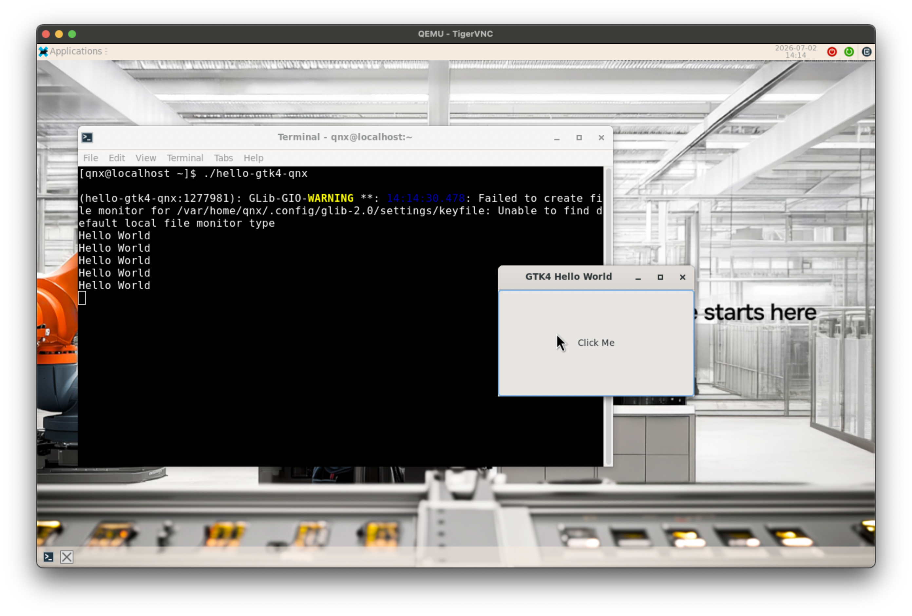
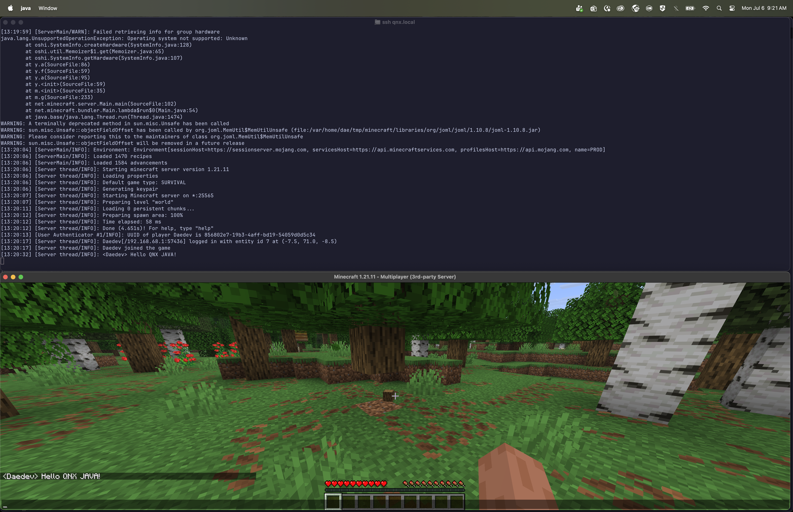

The self-hosted environment is a powerful tool, but in cases where you have an existing project that needs to use qcc, how do you utilizes the catalog of open source ports?
What you will learn:
Prerequisites:
apk ... no not android apk!!! apk-tools from Alpine linux is a lightweight but powerful package manager designed for systems that are optimized at scale. We have ported apk-tools to QNX. In order to install the packages from the QNX open-source repository, we need to have apk-tools built and installed on our host system. For this exercise we are going to assume a linux system.
Before we can begin we can compile apk-tools we first need to acquire system dependencies.
sudo apt install build-essential meson ninja-build pkg-config git libssl-dev zlib1g-dev libzstd-dev lua5.3
sudo pacman -S base-devel meson ninja git openssl zlib zstd lua53
doas apk add build-base meson ninja pkgconf git openssl-dev zlib-dev zstd-dev lua5.3
In order to make our life just a bit easier we are going to setup apk as a static binary. That way we don't need to set LD library paths.
# 3.0.6 is the latest version we are using at the time of writing. Check what version of apk-tools we are using for your system
git clone https://gitlab.alpinelinux.org/alpine/apk-tools.git --branch v3.0.6
meson setup -Dc_link_args="-static" -Dprefer_static=true -Ddefault_library=static build
ninja -C build src/apk
./build/src/apk --help
mkdir -p ~/.local/bin
cp ./build/src/apk ~/.local/bin
# If you want to have apk available all the time add this to your ~/.bashrc or ~/.zshrc
export PATH=$PATH:~/.local/bin
abuild is alpine's build system for packaging using APKBUILD files, we will need to setup abuild on our host in order to build apk wrapped qpkgs (QNX Software Center packages) which allows apk-tools to integrate QNX provided software.
Before we can begin we can compile abuild we first need to acquire system dependencies.
sudo apt install build-essential git make pkg-config libssl-dev scdoc fakeroot pax bsdextrautils curl bc pax-utils
sudo pacman -S base-devel git openssl scdoc fakeroot patch curl bc pax-utils
doas apk add build-base git make openssl-dev scdoc fakeroot patch curl bc pax-utils
# 3.15.0 is the latest version we using at the time of writing. Check what version of abuild we are using for your system
git clone https://github.com/qnx-ports/abuild --branch qnx-3.15.0
We are going to install this in your .local directory to not pollute your system
make install prefix="$HOME/.local" sysconfdir="$HOME/.local/etc"
Part of apk-tools and abuild is its packaging signing system that validates that a trusted authority has made these packages. For this you are going create your own signing keys for these packages and set yourself as a trusted authority.
abuild-keygen -a
Now that we have our tooling set up we can now build our QNX wrapped APKs.
But first we need some runtime dependencies.
sudo apt install netcat-openbsd python3
sudo pacman -S openbsd-netcat
There is nothing needed because busybox provides netcat.
For this step we will need 2 repositories:
qnx-ports/qsc-apk: this is where all the APKBUILD definitions are stored and branched based on the sdp versionqnx-packaging/build-qsc-apk: a helper script that will download the QNX packages from software center and build APKsgit clone https://github.com/qnx-ports/qsc-apk --branch 804
git clone https://github.com/qnx-packaging/build-qsc-apk.git
we need to know which architecture we want to package for - so pick what you want to build for (or if you build both, run the command again just with the other arch)
build-qsc-apk -o ~/.cache/qsc-apk/8.0.4/ --arch <x86_64|aarch64> --swc-cli-path ~/qnx/qnxsoftwarecenter/qnxsoftwarecenter_clt ./qsc-apk/qnx-core
build-qsc-apk -o ~/.cache/qsc-apk/8.0.4/ --arch <x86_64|aarch64> --swc-cli-path ~/qnx/qnxsoftwarecenter/qnxsoftwarecenter_clt ./qsc-apk/qnx-extra
We are now ready to setup our sysroot. a sysroot is a QNX system inside a folder, this allows your compiler/build system to discover libraries, headers and other things like pkg-conf
mkdir -p ./qnx-apk-sysroot
cd ./qnx-apk-sysroot
# We are a user merged system so we need to setup symlinks
mkdir -p usr/lib usr/bin
ln -s usr/lib usr/bin .
# Pick one arch here based on your target this is compatibility for qcc
ln -s . <x86_64|aarch64le>
Now that we have a folder structure we can ask apk to initialize the root for package management
apk --root . add --initdb --usermode
In order to install packages we need to tell apk what keys are trusted. We will setup our QNX signing key as well as the one we made back when we built abuild
mkdir -p etc/apk/keys
curl -L -o etc/apk/keys/qnxosd.rsa.pub https://repo.oss.qnx.com/keys/qnxosd.rsa.pub
cp ~/.abuild/*.pub etc/apk/keys/
Now we need to tell apk what repositories we want to pull packages from. Here we are doing an 8.0.4 system so we grab those repos plus the qsc-apk packages we made before
cat << EOF > etc/apk/repositories
https://repo.oss.qnx.com/8.0.3/core
https://repo.oss.qnx.com/8.0.3/extra
https://repo.oss.qnx.com/8.0.4/core
https://repo.oss.qnx.com/8.0.4/qnx-extra
$HOME/.cache/qsc-apk/8.0.4/qnx-core
$HOME/.cache/qsc-apk/8.0.4/qnx-extra
EOF
Lets tell apk to update its database with the new keys and repositories
apk --root . update
Now that our sysroot is all setup lets copy the full path
# This could be just `pwd` ... but i like paths relative to home
echo "${PWD/#$HOME/\~}"
After all that setup lets make sure we have everything working correctly. What's better than a good old hello world!!!?
Now we are going to use apk to get QNX dependencies that we need for C, this includes things like libc, gcc runtime libraries, and system headers
apk --root <path-to-qnx-apk-sysroot> add --no-scripts qnx-microkernel qnx-microkernel-dev qnx-gcc-libs qnx-gcc
We are going to make a directory called hello-world-apk with a main.c and a Makefile the result will look like this
hello-world-apk/
|-- main.c
|-- Makefile
Just a very simple hello-world which should look familiar to everyone
// main.c
#include <stdio.h>
#include <stdlib.h>
int main(int argc, char *argv[]) {
printf("Hello, World from Linux on QNX!\n");
return EXIT_SUCCESS;
}
While I could just give you a single command line to run and get the same result, having a makefile makes it easier to understand whats going on
# Makefile
# We are using qcc
CC = qcc
# we need the path to our sysroot. if you have been following along exactly this should work
# if not just `make SYSROOT=<path-to-qnx-apk-sysroot>`
SYSROOT ?= ../qnx-apk-sysroot
# This is where the magic happens
# 1. We add CFLAGS in-order for the compiler to recognize our sysroot for headers
CFLAGS += -I$(SYSROOT)/usr/include
# 2. We add LDFLAGS in-order to tell the linker in where to find shared libraries
LDFLAGS += -L$(SYSROOT)/usr/lib
# 3. We are the QNX target now
export QNX_TARGET="$(SYSROOT)"
# the rest of this make file is nothing special its just a standard makefile.
TARGET = hello-qnx
SRCS = main.c
all: $(TARGET)
$(TARGET): $(SRCS)
$(CC) $(CFLAGS) -o $(TARGET) $(SRCS) $(LDFLAGS)
clean:
rm -f $(TARGET)
Okay now.. lets ... make it ... with make ... say that 5 times fast
make
so now it should've worked :tada: ... but let's validate my claims first with handy dandy file
$ file hello-qnx
hello-qnx: ELF 64-bit LSB pie executable, x86-64, version 1 (SYSV), dynamically linked, interpreter /usr/lib/ldqnx-64.so.2, BuildID[md5/uuid]=34294113c5f608180bcc564d5a80ac01, with debug_info, not stripped
you should get something like this. What we really care about is the interpreter part. We should see /usr/lib/ldqnx-64.so.2 ... if so we are good to go. Copy this onto your target and give it a run
scp hello-qnx qnxuser@<ip/hostname>:~/
and lets give it a run
ssh qnxuser@<ip/hostname>
$ ~/hello-qnx
Hello, World from Linux on QNX!
Well that was a simple example. Let's get into something more complicated with lots of dependencies. Why not GTK4 ?
GTK4 is very complicated dependency-wise. There are a lot of moving parts to render to the screen - in this case either a wayland session or qnx-screen
Like hello world, we need some dependencies - but this time we are going to grab open source dependencies as well as a few QNX packages for crypto and graphics
apk --root <path-to-qnx-apk-sysroot> add --no-scripts gtk4-dev qnx-crypto-openssl3 qnx-screen-virtio bash
you will notice quite a few packages being added. About 140 packages are needed to properly build gtk applications!! This shows the power of using apk for compiling, as previously you would have to figure out how to build these dependencies yourself
Like hello world we are going to make a directory called gtk4-hello-world-apk with a main.c and a Makefile the result will look like this
gtk4-hello-world-apk/
|-- main.c
|-- Makefile
This is just "Hello World in C" taken directly from gtk's documentation
// main.c
#include <gtk/gtk.h>
static void
print_hello (GtkWidget *widget,
gpointer data)
{
g_print ("Hello World\n");
}
static void
activate (GtkApplication *app,
gpointer user_data)
{
GtkWidget *window;
GtkWidget *button;
GtkWidget *box;
window = gtk_application_window_new (app);
gtk_window_set_title (GTK_WINDOW (window), "Window");
gtk_window_set_default_size (GTK_WINDOW (window), 200, 200);
box = gtk_box_new (GTK_ORIENTATION_VERTICAL, 0);
gtk_widget_set_halign (box, GTK_ALIGN_CENTER);
gtk_widget_set_valign (box, GTK_ALIGN_CENTER);
gtk_window_set_child (GTK_WINDOW (window), box);
button = gtk_button_new_with_label ("Hello World");
g_signal_connect (button, "clicked", G_CALLBACK (print_hello), NULL);
g_signal_connect_swapped (button, "clicked", G_CALLBACK (gtk_window_destroy), window);
gtk_box_append (GTK_BOX (box), button);
gtk_window_present (GTK_WINDOW (window));
}
int
main (int argc,
char **argv)
{
GtkApplication *app;
int status;
app = gtk_application_new ("org.gtk.example", G_APPLICATION_DEFAULT_FLAGS);
g_signal_connect (app, "activate", G_CALLBACK (activate), NULL);
status = g_application_run (G_APPLICATION (app), argc, argv);
g_object_unref (app);
return status;
}
Now like before we are going to use a makefile to explain what the key parts are
# Makefile
# We are using qcc
CC = qcc
# we need tha path to our sysroot. if you have been following along exactly this should work
# if not just `make SYSROOT=<path-to-qnx-apk-sysroot>`
SYSROOT ?= ../qnx-apk-sysroot
# Now here is where things get interesting we need to configure
# 1. We tell pkgconf to look in our sysroot for pkgconf definitions
export PKG_CONFIG_LIBDIR := $(SYSROOT)/lib/pkgconfig:$(PKG_CONFIG_LIBDIR)
# 2. We also need to tell pkgconf that all definitions need to be relative to our sysroot
export PKG_CONFIG_SYSROOT_DIR := $(SYSROOT)
# 3. We are the QNX target now
export QNX_TARGET="$(SYSROOT)"
# 4. Like hello world we tell the compiler where our headers are AND
#. we use pkg-conf to add cflags that we need for gtk4 and its dependencies
CFLAGS = -I$(SYSROOT)/usr/include -O2 $(shell pkg-config --cflags gtk4)
# 5. Like hello world we tell the linker where our libraries are AND
#. we use pkg-conf to add libraries that we need for gtk4 and its dependencies
LDFLAGS = -L$(SYSROOT)/usr/lib $(shell pkg-config --libs gtk4)
# the rest of this make file is nothing special its just a standard makefile.
TARGET = hello-gtk4-qnx
SRCS = main.c
all: $(TARGET)
$(TARGET): $(SRCS)
$(CC) $(CFLAGS) -o $(TARGET) $(SRCS) $(LDFLAGS)
clean:
rm -f $(TARGET)
Okay now.. lets ... make it ... with make ... again
make
Now like before ... let's get this on a QNX system. Since we are using gtk4, we will need a system with a desktop like the Developer Desktop
scp hello-gtk4-qnx qnxuser@<ip/hostname>:~/
This time we can't just ssh in. We need to go into the desktop, open a terminal and run our application

We have now cross compiled an application with a complex dependency chain. Almost as simply as you would your own system
Let's recap what you just did! You built a fully managed apk-tools sysroot, wired it up to qcc, and successfully cross-compiled a basic C program and a GTK4 app—without having to build a single dependency yourself.
Cross-compilation has always been the standard for QNX development, and this setup slots right into that workflow. While QNXe introduces a self-hosted environment, many developers still rely on cross-compilation for existing projects or specific build pipelines. This apk sysroot gives you a clean way to tap into the growing ecosystem of open-source ports without reinventing the dependency wheel.
It's not just for make and simple programs either. The same sysroot concepts you saw here translate directly to complex build systems like Meson, CMake, or Bazel. (We'll leave that as an exercise for the reader, but the core PKG_CONFIG_LIBDIR, QNX_TARGET, and header/library flags apply to any system.)
While this wraps up the main codelab, the next two sections are optional deep dives you can skip or tackle depending on your needs:
qcc for clang, the same compiler we use on the self-hosted system.Thanks for following along, and happy cross-compiling!
So now that we've covered the basics, how does this work in the real world? Well ... thanks to the apk sysroot, I was able to port OpenJDK 25 to QNX. Java is a self-hosted language, which means you need a working JDK to build a new one. Normally, this requires bootstrapping version by version until you reach your target. But instead of spending years building n+1 versions, we can use Linux as a donor system.
It's not as simple as grabbing OpenJDK from a package manager and compiling. We first need a JDK that understands the QNX target, which brings us back to the bootstrapping problem. OpenJDK handles this with three distinct JDK roles:
In my case, I started with the official OpenJDK 25.0.2+10 release tarball for Linux as the Host JDK. If your distribution provides OpenJDK 25 you can also get from there.
Let's grab QNX's fork of OpenJDK 25 we also need to grab a pre generate Makefile (QNX has limitations on argv size so the generation of this file has to be commented out to work on qnx more details are here)
git clone https://github.com/qnx-ports/jdk25u.git --branch qnx-jdk-25.0.2+10_p1
curl -L -o jdk25u/main-targets.gmk https://raw.githubusercontent.com/qnx-ports/aports/refs/heads/803/extra/openjdk25/main-targets.gmk
The build JDK is essentially a "host" version of the same source code we want for the target. We need it because the final compiler needs to understand QNX-specific details to generate correct artifacts. This step is straightforward since it's just a native Linux build
bash configure \
--prefix=/usr/local/lib/jvm/java-25-openjdk \
--with-boot-jdk=../boot-jdk \
--with-extra-cflags="-D_LARGEFILE64_SOURCE" \
--with-extra-cxxflags="-D_LARGEFILE64_SOURCE" \
--with-jobs=$(nproc) \
--with-test-jobs=$(nproc) \
--disable-warnings-as-errors \
--disable-precompiled-headers \
--enable-dtrace=no \
--with-debug-level=release \
--with-native-debug-symbols=none
# Copy the pregenerate file
mkdir -p ./build/linux-$(arch)-server-release/make-support
cp main-targets.gmk ./build/linux-$(arch)-server-release/make-support/
make jdk-image
Once this is complete you'll have a JDK here build/linux-<arch>-server-release/ that will be used to build out final target
Like before, we'll set up an apk sysroot and install the packages OpenJDK needs to link against. I won't repeat the setup steps, but here are the packages required.
# Dependencies pulled from: https://github.com/qnx-ports/aports/blob/803/extra/openjdk25/APKBUILD
apk --root <openjdk-25-sysroot> add --no-scripts \
autoconf \
cups-dev \
fontconfig-dev \
freetype-dev \
gawk \
giflib-dev \
lcms2-dev \
libffi-dev \
libjpeg-turbo-dev \
libsysv-ipc-shim \
libsysv-ipc-shim-dev \
libx11-dev \
libxext \
libxext-dev \
libxrandr-dev \
libxrender-dev \
libxt-dev \
libxtst-dev \
qnx-alsa \
qnx-alsa-dev \
qnx-fd-notify-dev \
qnx-libc++-dev \
zlib-ng-dev \
zip \
qnx-crypto-openssl3 \
bash \
qnx-microkernel \
qnx-microkernel-dev \
qnx-gcc-libs \
qnx-io-sock-dev
Now we configure OpenJDK to use the sysroot and cross-compile.
#!/bin/bash
#build-cross-x86_64.sh
# Make sure to source your sdp before running configure
_sysroot=$(realpath ../sysroot-openjdk-x86_64)
PKG_CONFIG_LIBDIR=$(realpath $_sysroot/lib/pkgconfig) \
QNX_TARGET="$_sysroot" \
CC="ntox86_64-gcc" \
CXX="ntox86_64-c++" \
CPP="ntox86_64-cpp" \
PKG_CONFIG_SYSROOT_DIR=$_sysroot \
bash ./configure \
--prefix=/usr/local/lib/jvm/java-25-openjdk \
--openjdk-target=x86_64-pc-qnx \
--with-boot-jdk=../boot-jdk \
--with-build-jdk=./build/linux-$(arch)-server-release/images/jdk \
--with-sysroot="$_sysroot" \
--with-extra-cflags="-D_QNX_SOURCE -I$_sysroot/usr/include -I$_sysroot/usr/include/shims -D_LARGEFILE64_SOURCE" \
--with-extra-cxxflags="-D_QNX_SOURCE -I$_sysroot/usr/include/c++/v1 -I$_sysroot/usr/include -D_LARGEFILE64_SOURCE" \
--with-extra-ldflags="-L$_sysroot/usr/lib -shared-libgcc -L$_sysroot/usr/lib -lsocket -lepoll -leventfd -lsysv-ipc -lasound" \
--with-zlib=system \
--with-libjpeg=system \
--with-giflib=system \
--with-libpng=system \
--with-lcms=system \
--with-jobs=$(nproc) \
--with-test-jobs=$(nproc) \
--disable-warnings-as-errors \
--disable-precompiled-headers \
--enable-dtrace=no \
--with-debug-level=release \
--with-native-debug-symbols=none
mkdir -p ./build/qnx-x86_64-server-release/make-support
cp main-targets.gmk ./build/qnx-x86_64-server-release/make-support/
# Since we now have multiple configureations we need to explicitly pass the target
QNX_TARGET="$_sysroot" make jdk-image CONF=qnx-x86_64-server-release
There's a lot happening here, but you'll notice the same fundamentals we covered in the main codelab:
-I$_sysroot/usr/include (and -I$_sysroot/usr/include/c++/v1 for C++) to pull headers from our sysrootPKG_CONFIG_LIBDIR & PKG_CONFIG_SYSROOT_DIR so OpenJDK's build system can locate our packages-L$_sysroot/usr/lib to link against our sysroot librariesLets take a look at the result and prepare a archive we can send to a qnx target
cd build/qnx-x86_64-server-release/images/jdk
# QNX does not support $ORIGIN in rpath so we need to emulate it
cd bin
# yes this is a nested bin dir
mkdir bin
# move everything to bin
find . -maxdepth 1 -type f -exec mv "{}" ./bin/ ";"
cat << "EOF" > java-multicall.sh
#!/usr/bin/bash
JDK_DIR="$(realpath "$(dirname "$(readlink -f "${BASH_SOURCE[0]}")")"/../)"
CMD=$(basename "$0")
LD_LIBRARY_PATH="$(realpath $JDK_DIR/lib):$LD_LIBRARY_PATH" "$JDK_DIR/bin/bin/$CMD" "$@"
EOF
chmod +x java-multicall.sh
# create symlinks to java-multicall.sh based on the real bin folder
ls bin/ | xargs -I {} ln -sf java-multicall.sh {}
cd ../../
tar -czf ~/openjdk25-qnx.tar.gz jdk
Now we have a fully cross-compiled OpenJDK ready for deployment and can be copied to our target. I could just run java –version and call it a day, but let's test something real. How about a Minecraft server?

While qcc and q++ is the default and recommended compile by QNX the self hosted system uses Clang (llvm), which gives us access to a more modern toolchain with newer c++ standards and allows us to work with and port newer languages like rust, zig and odin.
Before we can begin to compile Calng we need to acquire system dependencies.
sudo apt install build-essential cmake ninja-build git python3 zlib1g-dev
sudo pacman -S base-devel cmake ninja git python
doas apk add build-essential cmake ninja git python3 zlib-dev linux-headers
While we have llvm support it has not been upstreamed yet so we will need to get our fork
# Depth 1 here is to speed this up if you want do patch it make sure you get the whole history
git clone https://github.com/qnx-ports/llvm-project.git --branch qnx-22.1.7_p0 --depth=1
An important thing to note here Clang and llvm like to use a lot of ram. To prevent other applications from crashing due to running out of memory, make sure to manually set -j. To comfortably compile llvm i recommend using 3 gigs of ram per cpu core
Now we need to setup llvm. We don't need the full suite of llvm libraries to install we just want Clang so we will statically compile it
# if you want the default target to be aarch64 use this triple aarch64-unknown-qnx
# Clamng by default supports all targets from the same binary so can just `clang --target=<triple>`
cmake -B build -S llvm -G Ninja \
-DCMAKE_INSTALL_PREFIX=~/.local \
-DCMAKE_BUILD_TYPE=Release \
-DLLVM_TARGETS_TO_BUILD="X86;AArch64" \
-DLLVM_DEFAULT_TARGET_TRIPLE=x86_64-pc-qnx \
-DLLVM_ENABLE_PROJECTS="clang"
ninja -C build -j<number>
ninja -C build install
Now lets see the results
$ clang --version
clang version 22.1.7 (https://github.com/qnx-ports/llvm-project af405f22587173152a9a47153428a2738348a504)
Target: x86_64-pc-qnx
Thread model: posix
InstalledDir: ~/.local/bin
Now that we have Clang lets take a look how this compared to our old setup
To start lets take out original example Hello world. In order to make this work we just need to update our Makefile
# We are using our built Clang
CC = clang
# We still hae our sysroot variable
SYSROOT ?= ../qnx-apk-sysroot
# We don't need to set -L and -I we can just pass our sysroot
CFLAGS += --sysroot=$(SYSROOT)
# Because we don't have lld we need to pass in the absolute path to the linker
LDFLAGS += -fuse-ld=$(shell which ntox86_64-ld)
# Nothing to note here same as before
TARGET = hello
SRCS = main.c
all: $(TARGET)
$(TARGET): $(SRCS)
$(CC) $(CFLAGS) -o $(TARGET) $(SRCS) $(LDFLAGS)
clean:
rm -f $(TARGET)
You will notice that the Makefile is quite simular to the base one but we swap out -I$(SYSROOT)/usr/include and -L$(SYSROOT)/usr/lib for just --sysroot=$(SYSROOT) this is because clang does not know about QNX software center and will work on any sysroot that follows the Filesystem Hierarchy Standard (FHS). The only other thing we now need to add is -fuse-ld we still need the qnx linker so we pass the absolule path.
okay now that we have done our hello world lets do the same thing for GTK
# Makefile
# We are using Clang
CC = clang
SYSROOT ?= ../qnx-apk-sysroot
# We still tell pkgconf about our sysroot
export PKG_CONFIG_LIBDIR := $(SYSROOT)/lib/pkgconfig:$(PKG_CONFIG_LIBDIR)
export PKG_CONFIG_SYSROOT_DIR := $(SYSROOT)
# Use sysroot and fuse-ld
CFLAGS = --sysroot=$(SYSROOT) -O2 $(shell pkg-config --cflags gtk4)
LDFLAGS = -fuse-ld=$(shell which ntox86_64-ld) $(shell pkg-config --libs gtk4)
# Nothing to note here same as before
TARGET = hello-gtk4-qnx
SRCS = main.c
all: $(TARGET)
$(TARGET): $(SRCS)
$(CC) $(CFLAGS) -o $(TARGET) $(SRCS) $(LDFLAGS)
clean:
rm -f $(TARGET)
just like hello world we just need to change out -L$(SYSROOT)/usr/lib and -I$(SYSROOT)/usr/include for --sysroot and -fuse-ld.
So, you just spent 30 minutes (or 3 hours, depending on your RAM) building Clang. Is it worth it?
Yes, if:
Stick with qcc if: